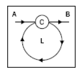
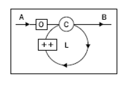

Condiciones (Bifurcaciones Condicionales)
Una condición es una estructura que realiza una tarea u otra dependiendo del resultado de evaluar una condición. Aquí vamos a ver:
- La estructura IF… ELSE
- La estructura SWITCH
Un Bloque (de código) es el conjunto de expresiones que quedan encerradas entre llaves. Estos bloques se pueden anidar.
https://developer.mozilla.org/es/Referencia_de_JavaScript_1.5/Sentencias/block
Ejemplo:
{
var a = 1;
var b = 3;
var c, d;
{
c = a + b;
{
d = a - b;
}
}
El if - else
https://developer.mozilla.org/es/Referencia_de_JavaScript_1.5/Sentencias/if...else
var result = '';
if (a > 2) {
result = 'a is greater than 2';
}
Las partes de una condición if
- La sentencia
if Una condición entre paréntesis. Esta condición siempre devolverá un booleano. Esta condición puede contener:
- Una operación lógica:
!,&&o|| - Una comparación como
===,!=,>y demás - Cualquier valor o variable que pueda ser convertido a Booleano
- Una combinación de estas
- Una operación lógica:
El bloque de código a ejecutar si se cumple la condición
- La sentencia
En el
iftambien puede haber una parte else opcional seguido de un bloque de código que se ejecutará si la condición se evalua afalse
Ejemplo:
if (a > 2) {
result = 'a is greater than 2';
} else {
result = 'a is NOT greater than 2';
}
- Entre el
ify elelse, pueden haber ilimitado numero de condicioneselse if
Ejemplo:
if (a > 2 || a < -2) {
result = 'a is not between -2 and 2';
} else if (a === 0 && b === 0) {
result = 'both a and b are zeros';
} else if (a === b) {
result = 'a and b are equal';
} else {
result = 'I give up';
}
¿Cuál es la mejor manera de chequear si existe una variable?
Existe también lo que se llama el operador ternario ? que nos permite abreviar algunas sentencias if simples
Ejemplo:
var result = (a === 1) ? "a is one" : "a is not one";
https://developer.mozilla.org/en/JavaScript/Reference/Operators/Special/Conditional_Operator
http://blog.stchur.com/2006/07/14/the-javascript-ternary-operator/
El switch
https://developer.mozilla.org/en/JavaScript/Reference/Statements/switch
var a = '1';
var result = '';
switch (a) {
case 1:
result = 'Number 1';
break;
case '1':
result = 'String 1';
break;
default:
result = 'I don\'t know';
break;
}
result;
Las partes de un switch
- La sentencia
switch - Una expresión entre paréntesis.
Esta expresión normalmente será una variable, pero puede ser cualquier expresión que devuelva un valor - Cierto numero de bloques
caseentre corchetes - Cada sentencia
caseva seguida de una expresión.
El resultado de esta expresión se compara con la expresión que hay después del switch.
Si la comparación de igualdad devuelvetrue, se ejecuta el bloque que hay tras estecase - Puede (y debe) haber una sentencia
breakal final de cada bloquecase.
Estosbreakprovocan la salida delswitch(de esta manera nos aseguramos de ejecutar un solo bloquecase) - Tambien puede (y debe) haber una sentencia
defaultque es seguida de un bloque de código que se ejecuta si ninguno de loscasees evaluado atrue
- La sentencia
Bucles (Loops)
Un bucle es una estructura que nos permite repetir un bloque de código muchas veces.
El número de repeticiones dependerá del resultado de evaluar una condición, antes (o después) de cada iteración
En Javascript hay 4 tipos de bucles:
- while loops
- do-while loops
- for loops
- for-in loops
El bucle while
https://developer.mozilla.org/es/Referencia_de_JavaScript_1.5/Sentencias/while
var i = 0;
while (i < 10) {
i++;
}

- La sentencia
whileva seguida de una condición entre paréntesis y un bloque de código entre corchetes. Mientras la condición se evalue a true, el código se ejecutará una y otra vez. - El número de repeticiones dependerá del resultado de evaluar una condición, antes (o después) de cada iteración
El bucle do-while
https://developer.mozilla.org/es/Referencia_de_JavaScript_1.5/Sentencias/do...while
var i = 0;
do {
i++;
} while (i < 10)
- El bucle
do-whilees una pequeña variación del buclewhile
La sentenciadova seguida de un bloque de código y una condición (conwhile) después del bloque.
Esto implica que el bloque de código se va a ejecutar siempre, al menos una vez, antes de evaluar la condición.
El bucle for
https://developer.mozilla.org/es/Referencia_de_JavaScript_1.5/Sentencias/for
http://blogs.sun.com/greimer/entry/best_way_to_code_a
http://blogs.sun.com/greimer/resource/loop-test.html
var punishment = '';
for (var i = 0; i < 100; i++) {
punishment += 'I will never do this again, ';
}

La estrucura del bucle for tiene 3 partes claramente diferenciadas (separadas por ;)
- Inicialización (var i=0): Código que es ejecutado antes de entrar en el bucle [O]
- Evaluación (i<100): Mientras evalue a true seguimos con el bucle [C]
- Incremento (i++): Código que es ejecutado después de cada iteración [++]
Se pueden anidar bucles
for
Ejemplo:
var res = '\n';
for(var i = 0; i < 10; i++) {
for(var j = 0; j < 10; j++) {
res += '* ';
}
res+= '\n';
}
El bucle for-in
https://developer.mozilla.org/es/Referencia_de_JavaScript_1.5/Sentencias/for...in
var a = ['a', 'b', 'c', 'x', 'y', 'z'];
var result = '\n';
for (var i in a) {
result += 'index: ' + i + ', value: ' + a[i] + '\n';
}
- El bucle
for-ines utilizado para recorrer los elementos de un array (o de un objeto)
Aunque basandonos en ES5 tambien podriamos utilizar Object.keys y forEach y hacer
var obj = { first: "John", last: "Doe" };
// Visit non-inherited enumerable keys
Object.keys(obj).forEach(function(key) {
console.log(key);
});